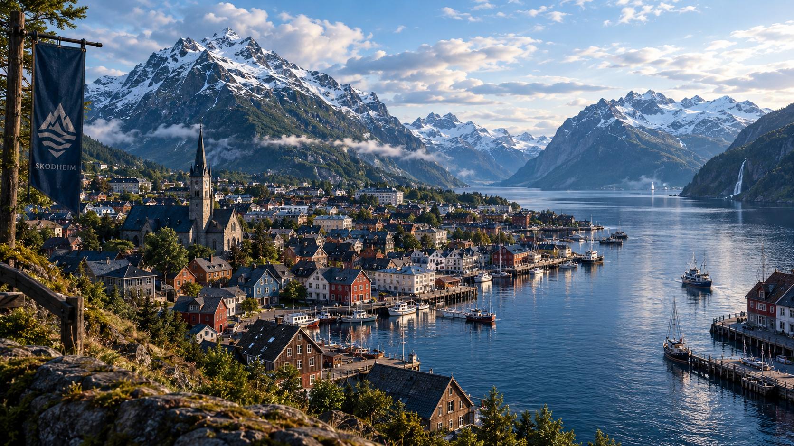
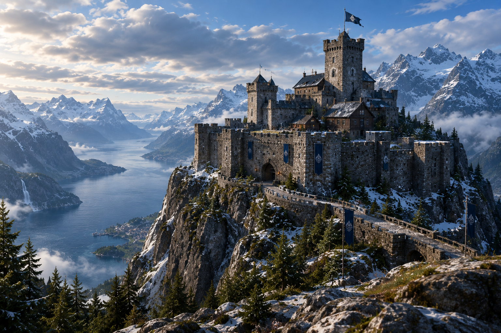

Auroras Boreales
La ciudad está construida alrededor de un enorme fiordo de montañas. Durante el invierno, las largas noches permiten observar las espectaculares auroras boreales desde los miradores de la montaña.

Entre las frias montañas, fiordos y auroras boreales de Noruega se encuentra Skodheim, una ciudad turistica donde las antiguas tradiciones nordicas conviven con un impresionante paisaje natural. Descubri sus leyendas, recorre sus fiordos y contempla uno de los cielos mas espectaculares del norte.

La ciudad está construida alrededor de un enorme fiordo de montañas. Durante el invierno, las largas noches permiten observar las espectaculares auroras boreales desde los miradores de la montaña.
Skodheim está rodeada por impresionantes fiordos que ofrecen paisajes naturales incomparables. Disfrutalos con tu familia en un viaje en los antiguos drakkar.

Construida hace siglos para proteger la ciudad. Actualmente funciona como museo y mirador. Conserva antiguos mapas, herramientas, objetos de navegación y piezas de artesanía.
